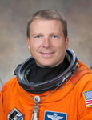

Lyndon B. Johnson Space Center
Houston, Texas 77058
|
National Aeronautics
and Space Administration Lyndon B. Johnson Space Center Houston, Texas 77058 |
 |
Biographical Data |
||
Terry Virts (Colonel, USAF)
NASA Astronaut
PERSONAL DATA: Born in December 1967, in Baltimore, Maryland, but considers Columbia, Maryland, to be his hometown. Married with two children. Virts enjoys baseball, astronomy and coaching youth sports.
EDUCATION:
SPECIAL HONORS/AWARDS: Graduated with Academic Distinction from the United States Air Force Academy and Embry-Riddle Aeronautical University; Distinguished Graduate of Undergraduate Pilot Training at Williams Air Force Base, Arizona, and F-16 training at Macdill Air Force Base, Florida. Military decorations include the NASA Space Flight Medal, Defense Meritorious Service Medal, Meritorious Service Medal, Air Medal, Aerial Achievement Medal, NASA Exceptional Achievement Medal, Air Force Commendation Medal, et al.
EXPERIENCE: Virts attended the Ecole de l’Air (French Air Force Academy) in 1988 on an exchange program from the United States Air Force Academy. He received his commission as a Second Lieutenant upon graduation from the United States Air Force Academy in 1989. He earned his pilot wings from Williams Air Force Base, Arizona, in 1990. From there, Virts completed basic fighter and F-16 training and was assigned to Homestead Air Force Base, Florida, as an operational F-16 pilot in the 307th Tactical Fighter Squadron. After Hurricane Andrew struck Homestead in 1992, his squadron was moved to Moody Air Force Base, Georgia. From 1993 to 1994, he served in the 36th Fighter Squadron at Osan Air Base, Republic of Korea, where he flew low-altitude night attack missions in the F-16. Following his tour in Korea, he was reassigned to the 22nd Fighter Squadron at Spangdahlem Air Base, Germany, from 1995 to 1998. There, he flew the suppression of enemy air defenses missions, logging 45 combat missions in the F-16. Virts was a member of the United States Air Force Test Pilot School class 98B at Edwards Air Force Base, California. Following graduation, he was an Experimental Test Pilot at the F-16 Combined Test Force at Edwards from 1999 until his selection as a member of the 18th group of astronaut candidates in 2000. While at Edwards he served as the chief test pilot for the F-16 HARM Targeting System (HTS) as well as the Multi-Mission Computer (MMC) programs, the largest upgrade program in the 40-year history of the F-16.
He has logged over 4,300 flight hours in more than 40 different aircraft.
NASA EXPERIENCE: Selected as a pilot by NASA in July 2000, Virts reported for training in August 2000. His technical assignments to date have included Lead Astronaut for the T-38 program, Shuttle Avionics Integration Laboratory (SAIL) test crew member, Expedition 9 Crew Support Astronaut and lead astronaut for appearances. He has worked as a Capsule Communicator (CAPCOM) from Expedition 8 to 19 as well as STS-115 to STS-126, communicating with station and shuttle crews from Mission Control in Houston. He also served as the lead Ascent and Entry CAPCOM, Chief of the Astronaut Office Robotics Branch and lead astronaut for the Space Launch System heavy lift booster.
SPACEFLIGHT EXPERIENCE STS-130 pilot, Endeavour (February 8 to February 21, 2010), carrying aloft the International Space Station’s final permanent modules: Tranquility and Cupola. Tranquility (or Node 3) is now the life-support hub of the space station, containing exercise, water recycling and environmental control systems, while the Cupola provides the largest set of windows ever flown in space. These seven windows, which are arranged in a hemisphere, provide a spectacular and panoramic view of our planet and afford crews a direct view of station robotic operations.
As pilot, Virts was responsible for assisting Commander George Zamka during launch, landing, rendezvous and orbital maneuvering. He was also the mission’s lead robotic operator and was responsible for much of the internal outfitting of Tranquility and Cupola. During the 13-day, 18-hour mission, Endeavour traveled more than 5.7 million miles and completed 217 orbits of the Earth.
Virts is currently assigned to Expedition 42/43, as commander for Expedition 43, which is scheduled to launch on a Russian Soyuz in December 2014, with a planned landing in May 2015.
JUNE 2013